Seguindo o AppLayout: telas de gerente em coluna larga (lg) para as tabelas respirarem — 2a colaboradores, 2b relatório; telas de colaborador/login numa coluna central confortável (sm) — 2c bater ponto, 2d login. App bar preto com banda espectral, superfícies planas.
2aGerente · colaboradores · lg
faceclock.app/gerente/colaboradores
FaceClock
FuncionáriosRelatórioPerfilSair
Meus colaboradores
Colaboradores da sua empresa. Clique em um para abrir a ficha.
Uma identidade nítida para o ponto por reconhecimento facial.
Restyle completo sobre o sistema Valtech — preto/branco disciplinado, tipografia Valtech Neue Light, o espectro prismático reservado para os momentos-herói. Três direções de logo (1a / 1b / 1c), o banner de repositório (1d) e todas as telas redesenhadas (1e).
01 — Logo
Três direções de marca
1aLockup horizontal
FaceClock
FaceClock
Marca-anel: o asterisco Valtech vira os ponteiros do relógio, e o anel também lê como o guia oval da câmera. Une produto e marca num só glifo.
1bEmpilhado · face
FaceClock
FaceClock
Mais literal: o oval do rosto com ponteiros e marcações de relógio dentro. Empilhado, ótimo para splash e cabeçalhos verticais.
1cÍcone de app · favicon
F*
A marca-anel reduzida a ladrilho de app — plano (sharp) e iOS (arredondado com aro espectral), favicon e o monograma “F✳”.
1d02 — Banner de repositório · 1280 × 640
GitHub social banner
FaceClock
Ponto de trabalho vinculado à identidade.
Reconhecimento facial no totem, relatórios de horas por empresa — presença que não se empresta.
Python · FastAPIReact · ViteDeepFace · ArcFace

1e03 — Interface (mobile-first · pt-BR)
Todas as telas, novo revestimento
Mesmos fluxos e layout — pele Valtech: superfícies planas, bordas de 1px, cantos retos, Valtech Neue nos títulos, Sons no corpo. Espectro só nos momentos de sucesso. Entrada em teal, saída em vermelho-sinal.